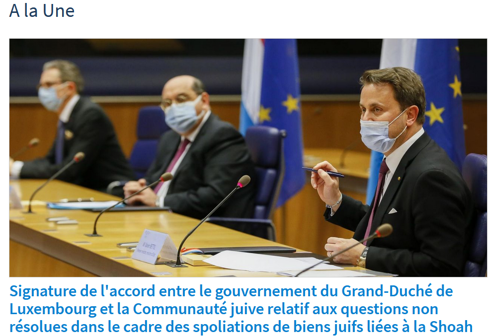
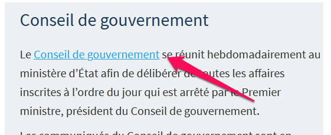
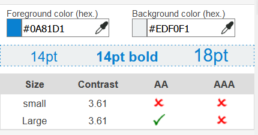
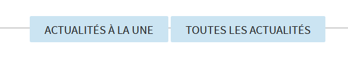
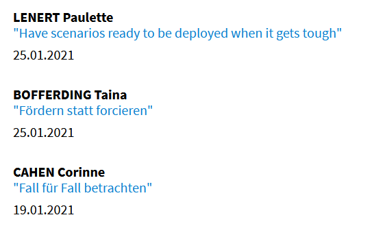
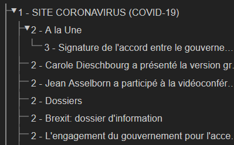
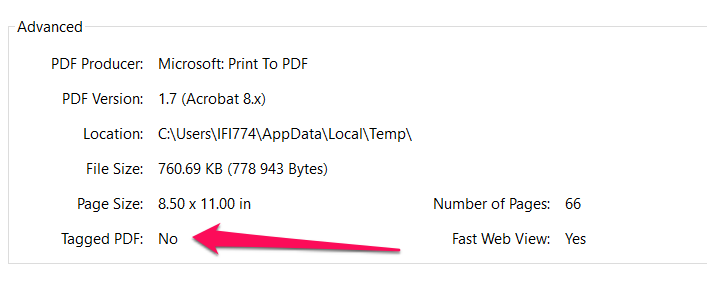

Audit d'accessibilité simplifié
Fiche signalétique
Site : gouvernement.lu
Date de l’évaluation : 28 janvier 2021
Échantillon de pages :
P1 : page d’accueil https://gouvernement.lu/fr.html
P2 : page contact https://gouvernement.lu/fr/support/contact.html
P3 : page article avec une galerie photo et un fichier en téléchargement https://gouvernement.lu/fr/actualites/toutes_actualites/communiques/2020/11-novembre/11-tanson-controle-honorabilite.html
Méthode d'évaluation : Méthode de contrôle simplifiée de l’accessibilité pour le Luxembourg – v1
Référentiel : RGAA v4
Avertissement
Attention, l’audit effectué est un audit simplifié et non un audit de conformité (ou audit "complet"). Il a vocation à détecter une série de problèmes d’accessibilité mais n'est pas exhaustif. Le fait qu’aucun problème ne soit remonté pour un critère RGAA donné ne signifie pas qu’il n’y a pas de problème d’accessibilité pour ce critère. De même, lorsque nous rapportons une occurrence d’un problème, ce problème peut avoir d’autres occurrences. N’hésitez pas à vérifier de manière exhaustive l’accessibilité de votre site conformément au référentiel RGAA v4.
Appréciation générale
Résumé
Le niveau d’accessibilité de gouvernement.lu est moyen. Un travail de fond sur l’accessibilité a déjà été réalisé mais certains points restent problématiques, comme les problèmes liés aux scripts, à la navigation au clavier et aux liens. On constate que la plupart des problèmes d’accessibilité rencontrés sont présents sur tous les sous-sites. En termes rédactionnels, les principaux points d’attention concernent les alternatives d’images, les changements de langue ainsi que les documents en téléchargement (critères 1.1, 1.2, 8.7 et 13.3).
Quantité de contenus dérogés
La fréquence des contenus dérogés peut impacter la pertinence de cet audit.
Certains contenus dérogés sont peu fréquents, il s’agit par exemple du fil twitter sur la page d’accueil ou la carte interactive sur la page contact.
Les documents bureautiques en téléchargement sont fréquemment publiés sur ce site mais une part importante a été publiée avant le 23 septembre 2018. Parmi ces documents nombreux sont ceux qui sont issus d’organisations tierces.
Les vidéos sont relativement fréquentes, toutes les vidéos en live et les vidéos publiées avant le 23 septembre 2020 sont exemptées. Les vidéos après cette date sont sous-titrées mais ne fournissent en général pas de transcription.
Sur les pages faisant partie de cet échantillon, les contenus dérogés sont les suivants :
Fil twitter sur la page d’accueil
Carte interactive sur la page contact
Quantité et nature des documents bureautiques en téléchargement
La quantité et la nature des documents bureautiques en téléchargement peut impacter la pertinence de cet audit. En effet, plus il y a de documents bureautiques en téléchargement, plus il y a de chances que les utilisateurs handicapés n’accèdent pas à l’information.
Les documents bureautiques en téléchargement sont fréquemment publiés sur le site. Il s’agit majoritairement de documents PDF à consulter, et non de formulaires ou de documents liés à des procédures administratives actives.
Relevé des non-conformités
Critère 1.1 : Chaque image porteuse d'information a-t-elle une alternative textuelle ?
L’alternative textuelle est utilisée par les aveugles pour comprendre l’information véhiculée par une image.
Occurrences :
Sur la page P3, l’alternative textuelle des images dans la galerie est vide. Par contre la balise figcaption, normalement réservée aux descriptions détaillées et aux crédits photo, contient l’information. Cette information devrait être reportée dans l’attribut alt de l’image.
Critère 1.2 : Chaque image de décoration est-elle correctement ignorée par les technologies d'assistance ?
La présence d’une alternative d’image sur une image de décoration perturbe la compréhension de la page chez les aveugles.
Occurrences :
Sur la page P1, l’image de l’article à la une est une image de décoration. Celle-ci devrait avoir un attribut alt vide mais ce n’est pas le cas. Le problème est aussi présent pour certaines photos des ministres, elles doivent toutes avoir un attribut alt vide.

Critère 3.2 : Dans chaque page web, le contraste entre la couleur du texte et la couleur de son arrière-plan est-il suffisamment élevé (hors cas particuliers) ?
Vérifier que les contrastes entre le premier plan et l’arrière-plan rencontrent les seuils de contrastes exigés par les WCAG 2 AA
Documentation : Les éléments doivent avoir un contraste de couleurs suffisant
Les contrastes de couleur insuffisants sont problématiques pour de nombreux handicaps visuels.
Occurrences :
Sur la page P1, le lien « conseil de gouvernement » n’est pas assez contrasté avec son arrière-plan. Le contraste est de 3.62 :1 et devrait être de 4.5 :1


Critère 6.1 : Chaque lien est-il explicite (hors cas particuliers) ?
Chacun doit pouvoir comprendre aisément la fonction et la destination de chaque lien. Les problèmes rencontrés ici le sont pour les aveugles, les malvoyants, les handicapés moteurs qui naviguent à la voix et les handicapés cognitifs
Occurrences :
Le lien « Actualités à la une » a un attribut title qui contient uniquement la mention « Actualités ». Celui-ci ne reprend pas le contenu visible du lien, on a donc une perte d’information. L’attribut title pourrait être ici supprimé. 
Critère 7.1 : Chaque script est-il, si nécessaire, compatible avec les technologies d'assistance ?
Si la sémantique de certains éléments n’est pas respectée, ceux-ci seront annoncés de manière erronée aux utilisateurs de screen readers et ceci les induira en erreur quant-au comportements possibles de ces éléments.
Occurrences :
Sur toutes les pages, le menu pour changer de langue utilise le rôle ARIA « menu », or celui-ci est réservé à des applications complexes. Il est ici nécessaire de supprimer les rôles « menu » et « menuitem ».
Critère 7.3 : Chaque script est-il contrôlable par le clavier et par tout dispositif de pointage (hors cas particuliers) ?
Il est normalement possible d’interagir avec les principaux composants d’interface au clavier. Lorsqu’un composant est annoncé par un screen reader, l’utilisateur s’attend à pouvoir utiliser les commandes aux clavier associées à ce composant. Si ce n’est pas le cas, nous avons un problème d’accessibilité.
Occurrences :
Sur toutes les pages, le bouton de recherche n’est pas activable au clavier avec la barre d’espace. Il ne respecte pas le design pattern « button » tel que défini dans la spécification ARIA.
Critère 8.2 : Pour chaque page web, le code source généré est-il valide selon le type de document spécifié (hors cas particuliers) ?
Si le code source de chaque page n’est pas valide, cela peut poser des problèmes de compatibilités à différentes technologies d’assistance.
Vérifier que les attributs ARIA sont autorisés pour le rôle d’un élément
Documentation : Les éléments doivent seulement utiliser les attributs ARIA autorisés
Occurrences :
Sur toutes les pages, l’attribut aria-selected="true" n’est pas autorisé sur l’élément courant du sélecteur de langues.
Vérifier que les éléments avec des rôles ARIA ont les attributs ARIA requis
Documentation : Les attributs ARIA requis doivent être présents
Occurrences :
Sur toutes les pages, il manque un attribut aria-level sur les éléments possédant un rôle heading (titres dans le footer)
Vérifier que les listes sont structurées correctement
Documentation : <ul> et <ol> ne doivent contenir directement que des éléments <li>, <script> ou <template>
Occurrences :
Les deux dossiers présents sur la page d’accueil font partie d’une liste qui ne possède pas de <ul>
Sur la page p3, une liste ol contient des enfants avec un rôle tabpanel qui n’est pas autorisé dans une liste ol.
Critère 8.7 : Dans chaque page web, chaque changement de langue est-il indiqué dans le code source (hors cas particuliers) ?
Les lecteurs d’écrans utilisent les informations de langue de différents passages de texte pour adapter la langue de la synthèse vocale utilisée. Si ces informations ne sont pas présentes, les textes seront lus avec la synthèse vocale de la langue principale de la page. Ces passages de texte peuvent donc être incompréhensibles.
Occurrences :
Sur la home page, les liens sous le titre « interviews » n’ont pas de changement de langue indiqués.

Critère 9.1 : Dans chaque page web, l'information est-elle structurée par l'utilisation appropriée de titres ?
Les personnes aveugles utilisent la hiérarchie de titres pour comprendre la structure de la page et pour pouvoir naviguer rapidement dans cette structure (passer d’un titre à un autre par niveaux de titres).
Occurrences :
Sur la page d’accueil, le seul titre de niveau 1 est « SITE CORONAVIRUS ». Cela laisse donc penser que c’est le titre de la page et que tous les titres de niveaux inférieurs dépendent de celui-ci. Il est nécessaire d’avoir ici un autre titre de niveau 1.

Critère 9.2 : Dans chaque page web, la structure du document est-elle cohérente (hors cas particuliers) ?
Les zones principales de la page (header, navigations, zone principale de contenu, footer) doivent être correctement identifiées. Cela permet aux utilisateurs aveugles et handicapés moteur de naviguer plus aisément dans la page.
Occurrences :
Sur la page contact, le fil d’Ariane n’est pas contenu dans une balise nav.
Critère 10.3 : Dans chaque page web, l'information reste-t-elle compréhensible lorsque les feuilles de styles sont désactivées ?
Les feuilles de style permettent de réordonner le contenu présent dans le code HTML pour le présenter dans un ordre différent à l’écran. L’ordre du code HTML est néanmoins utilisé par les lecteurs d’écran. Si cet ordre n’est pas cohérent, cela va impacter la compréhension du document chez les aveugles et grands malvoyants.
Occurrences :
Le bandeau des cookies est actuellement placé après la navigation et le champ de recherche. Ce bandeau doit être placé dans le code en début de document, pour être restitué par les lecteurs d’écran en premier. L’objectif de ce bandeau de cookie est d’obtenir le consentement de l’utilisateur et cette tâche est à réaliser par les utilisateurs en arrivant sur la page.
Critère 10.7 : Dans chaque page web, pour chaque élément recevant le focus, la prise de focus est-elle visible ?
Certains handicapés moteurs naviguent exclusivement au clavier en utilisant certaines technologies d’assistance. Pour pouvoir utiliser un site web au clavier, il est nécessaire de savoir sur quel élément de la page on se trouve. C’est le rôle de la prise de focus. Si cet élément n’est pas visible, on ne sait pas sur quel élément interactif on se situe et on ne peut l’utiliser.
Occurrences :
Sur la page P3, la prise de focus n’est pas visible sur tous les éléments au sein de la galerie photo.
Critère 10.8 : Pour chaque page web, les contenus cachés ont-ils vocation à être ignorés par les technologies d'assistance ?
Vérifier qu’aria-hidden n'est pas assigné aux éléments qui reçoivent le focus au clavier
Documentation : aria-hidden n’est pas assigné aux éléments qui reçoivent le focus au clavier
Occurrences :
Les boutons slide précédent et slide suivant sur la page P3 ne seront pas restitués pour les utilisateurs de lecteurs d’écran car dans un conteneur en aria-hidden=true. Ils peuvent cependant prendre le focus au clavier. L’attribut aria-hidden=true peut ici être supprimé.
Critère 11.1 : Chaque champ de formulaire a-t-il une étiquette ?
Pour chaque champ de formulaire, il est important d’avoir une étiquette visible associée. Si cette étiquette n’est visible que lorsque le champ est vide, cela peut poser problème à des utilisateurs ayant des troubles de la mémoire ou de l’attention.
Occurrences :
Sur toutes les pages, le champ de recherche n’a pas de label visible. Il est nécessaire de rajouter un attribut title pertinent sur ce champ.
Critère 11.10 : Dans chaque formulaire, le contrôle de saisie est-il utilisé de manière pertinente (hors cas particuliers) ?
Sur un formulaire, les messages d’erreur permettent aux utilisateurs de corriger leur saisie. Si ces messages sont imprécis, cela peut bloquer des utilisateurs atteints de handicaps cognitifs.
Occurrences :
Sur la page de contact (P2), le message d’erreur du champ email ne mentionne pas le type de données attendu, ni ne fournit d’exemple de saisie réelle.
Critère 11.13 : La finalité d'un champ de saisie peut-elle être déduite pour faciliter le remplissage automatique des champs avec les données de l'utilisateur ?
Les personnes avec un handicap moteur peuvent avoir des difficultés à saisir des informations dans des formulaires. Le remplissage automatique de leurs données personnelles par les navigateurs est une technique leur permettant de remplir plus rapidement certains formulaires.
Occurrences :
Sur la page P2, les champs du formulaire concernant les données personnelles de l’utilisateur (nom, prénom, email, téléphone) n’ont pas d’attribut autocomplete. Le remplissage automatique des navigateurs ne fonctionnera pas correctement.
Critère 13.3 : Dans chaque page web, chaque document bureautique en téléchargement possède-t-il, si nécessaire, une version accessible (hors cas particuliers) ?
Les fichiers bureautiques en téléchargement se doivent d’être accessibles ou le site doit fournir une alternative accessible (par exemple le même contenu présenté dans une page web). Dans le cas contraire l’information contenue dans ces fichiers ne sera pas accessible aux personnes handicapées.
Occurrences :
Sur la page P3, les documents en téléchargement ne sont pas accessibles. En particulier le fichier PDF n’est pas taggué.
